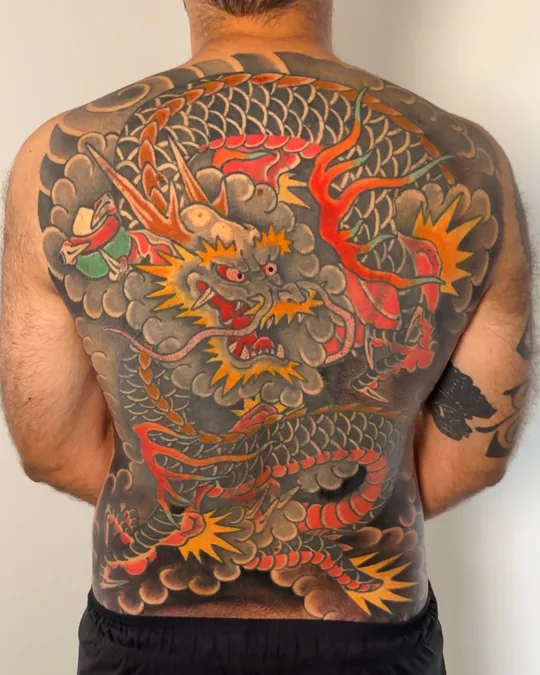
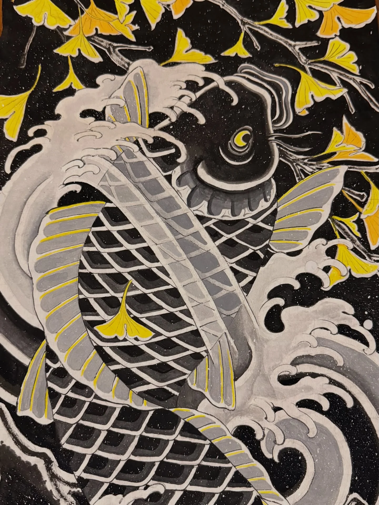
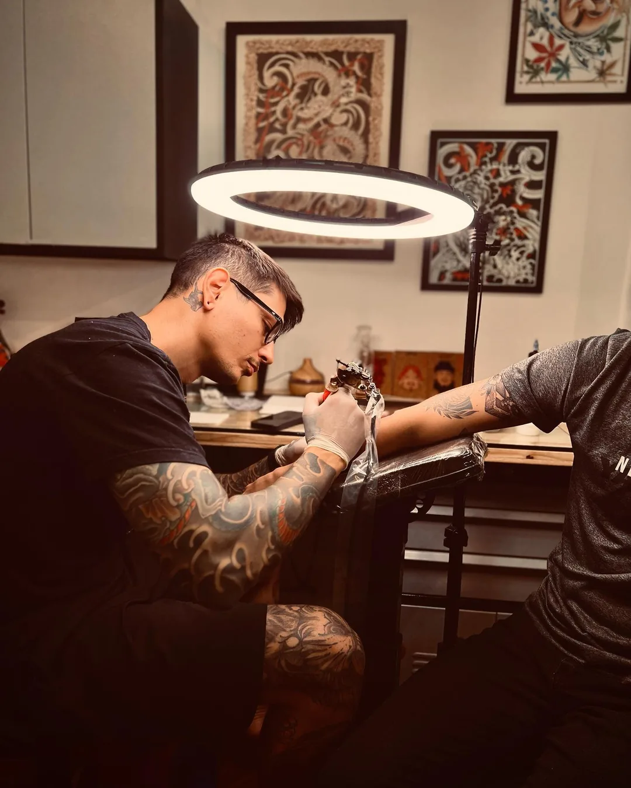
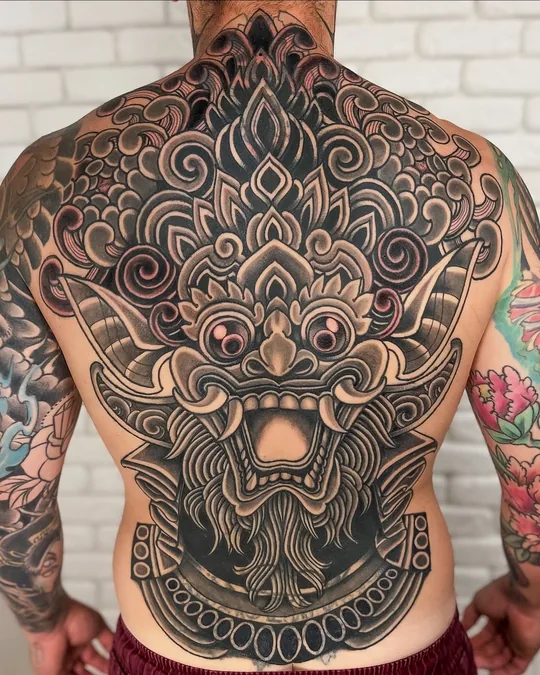
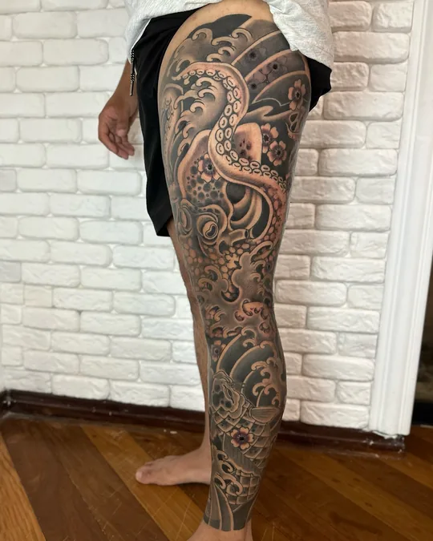
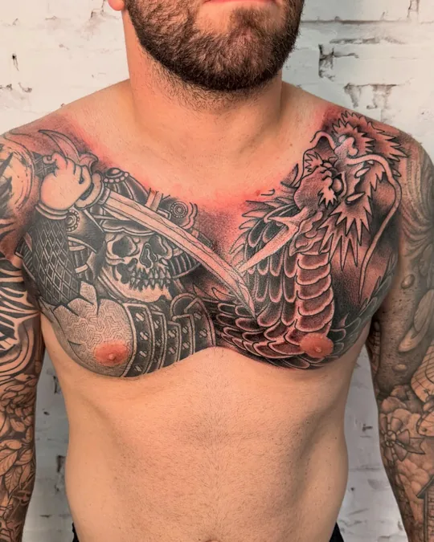
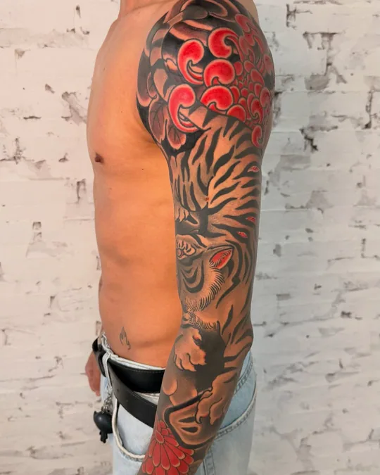
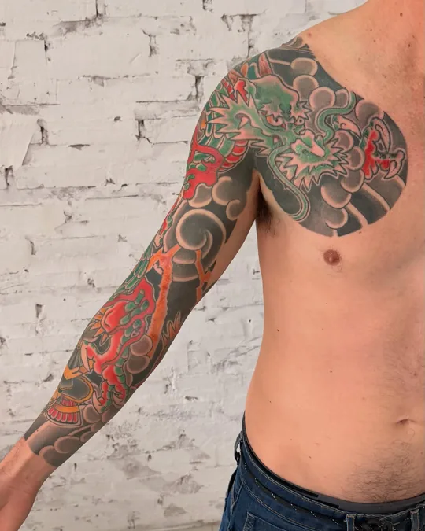

Costas
Dragão sobre um mago
Começamos em 2020 com um desafio: cobrir um mago que ocupava quase todas as costas do Fernando. Virou um dragão, até onde a pele deixava ir.

Tatuagem japonesa em Maringá-PR
Braços fechados, pernas e costas desenhados para o corpo de cada cliente. Dezessete anos de tatuagem e a mesma mão que pinta em papel de arroz.
Agenda de novembro aberta
Maringá-PR
Uma semana por mês em Campo Grande-MS
Carpa com ginkgo · pintura do Thomás em papel de arroz

Sobre
O Thomás escolheu a tatuagem japonesa como centro do trabalho: carpas, dragões, hannyas, tigres e crisântemos, sempre amarrados por um fundo de vento, nuvem ou água que fecha a composição no corpo.
Os projetos grandes começam no papel. Ele pinta com sumi, nanquim e guache sobre papel de arroz, e monta os braços em 3D antes da primeira sessão, para você ver o fechamento inteiro antes de começar.
Em 2026 abriu estúdio novo em Maringá. Uma semana por mês segue atendendo em Campo Grande-MS, na Hard Work Tattoo.
Fechamentos
Trabalhos que levam meses, às vezes anos. Toque na foto para ampliar e nas miniaturas para ver outros ângulos.

Costas
Começamos em 2020 com um desafio: cobrir um mago que ocupava quase todas as costas do Fernando. Virou um dragão, até onde a pele deixava ir.

Costas
O rei dos espíritos da mitologia de Bali, nas costas do Hugo Guaracy, um dos tatuadores que ensinaram o Thomás a tatuar.

Perna
Para terminar antes de ele voltar ao Japão, foram cinco sábados seguidos de sessão.

Peito
Samurai de um lado, dragão do outro, fechando o peito do Gustavo.

Braço
Tigre e flores vermelhas com fundo escuro, do ombro ao punho.

Braço e peito
Dragão, flores e fundo de nuvens subindo do punho até o peito.
Trabalhos
Prontos para tatuar
Projetos já desenhados, esperando alguém. Todos podem ser adaptados para outra parte do corpo.
Peças menores, prontas, em cor ou em preto e cinza. Toque para ampliar ou em "Quero este" para pedir.
F01Quero este
F02Quero este
F03Quero este
F04Quero este
F05Quero este
F06Quero este
F07Quero este
F08Quero este
F09Quero este
F10Quero este
F11Quero este
F12Quero este
F13Quero este
F14Quero este
Do papel para a pele
Sumi sobre papel, nanquim e guache sobre papel de arroz, acrílica em kraft. Muitas viram projeto de braço, perna ou costas.
Carpa com ginkgo, papel de arroz
Fujin, papel canson 200 g
Raijin, deus do trovão
Kintaro e a carpa
Carpa no Portão do Dragão, nanquim e acrílica em kraft
Tigre, nanquim e guache sobre papel de arroz
Tatuagem antiga
Cobrir uma tatuagem é desenhar outra por cima pensando no que já está na pele: onde o preto entra, o que o fundo esconde e o que vira parte do desenho novo. As costas do dragão e do Barong, lá em cima, também são coberturas.
Tatuagens antigas que ela já não queria viraram uma composição nova, com força e movimento do ombro ao punho.
Braço inteiro refeito, finalizado no fim de outubro de 2026.
Primeira sessão de uma cobertura: blocos de preto fecham o que existia e abrem espaço para o desenho novo.
Um rosto tradicional bem limpo, desenhado para disfarçar a tatuagem antiga do pescoço.
Tem uma tatuagem que você não quer mais? Monte o pedido e mande a foto dela na conversa.
Orçar uma coberturaDo primeiro contato à última sessão
Você manda a ideia, o lugar do corpo e fotos de onde a tatuagem vai entrar. Se já tem tatuagem antiga ali, manda também.
O projeto é desenhado para o seu corpo: pintado no papel ou montado num braço em 3D, para ver o fechamento inteiro antes da primeira linha.
Primeiro o contorno e os elementos principais, depois o fundo de nuvem, onda ou vento, muitas vezes à mão livre direto na pele.
Entre uma sessão e outra a pele cicatriza. O ritmo é combinado com você: tem costas que fecham em meses e projeto que cresce ao longo dos anos.
Para ter ideia do ritmo
Novembro
Monte o pedido em quatro etapas: ele sai pronto para colar no WhatsApp ou na DM.
Estúdio próprio, aberto em 2026. Endereço enviado no agendamento.
Uma semana por mês na Hard Work Tattoo (@hardwork_tattoo). As datas saem nos stories.
Toque duas vezes na foto para aproximar